Лабораторная работа №10
Основы работы с модулями ядра операционной системы
Лемуш Мариу Франсишку
2025
Докладчик
- Лемуш Мариу Франсишку
- Студент группы НПИбд-01-24
- Студ. билет 1032239162
- Российский университет дружбы народов
Цель работы
- Получить навыки работы с утилитами управления модулями ядра операционной системы
- Изучить команды для загрузки, выгрузки и просмотра модулей ядра
- Научиться работать с параметрами модулей
Теоретическая справка
Модули ядра Linux
Основные понятия: - lsmod — просмотр загруженных модулей
- modinfo — информация о модуле - insmod /
rmmod — загрузка/выгрузка модуля - modprobe —
умная загрузка с зависимостями - /lib/modules/$(uname -r)/
— директория с модулями
Просмотр устройств и модулей ядра
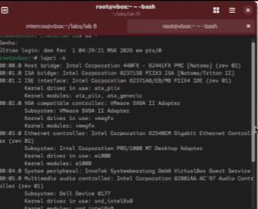
Загруженные модули ядра
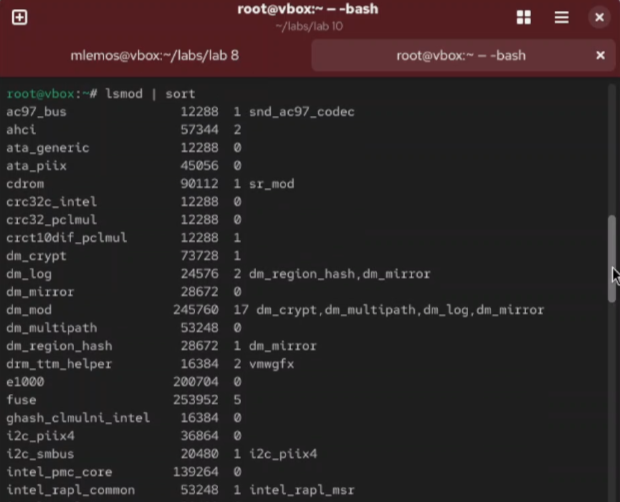
Работа с модулем ext4
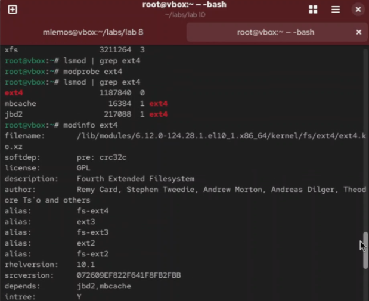
Попытка выгрузки модулей
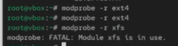
Работа с модулем bluetooth (часть 1)
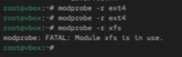
Информация о модуле bluetooth
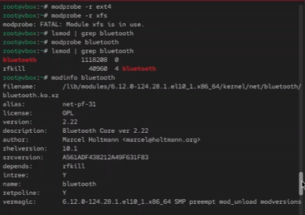
Выгрузка модуля bluetooth
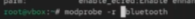
Проверка версии ядра
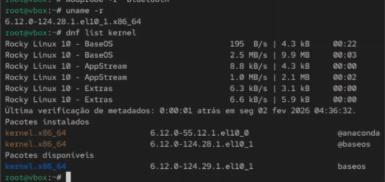
Обновление системы
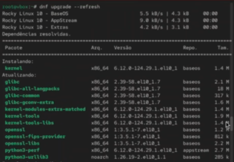
Обновление ядра ОС
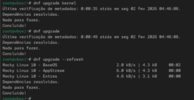
Выбор нового ядра при загрузке
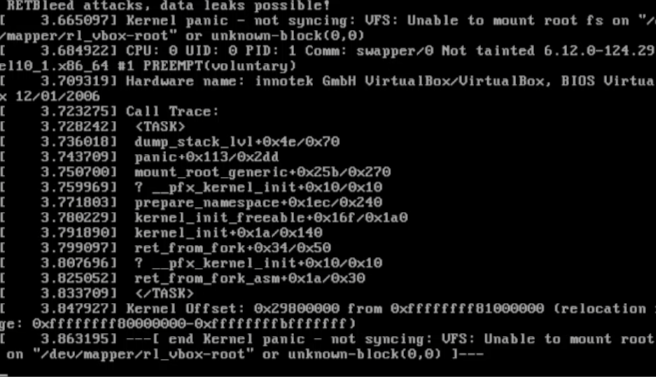
Проверка версии ядра после обновления
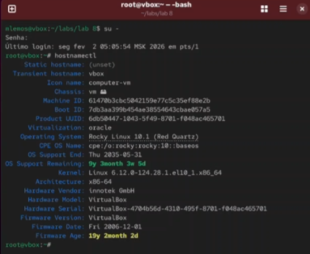
Просмотр параметров модуля
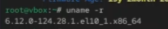
Загрузка модуля с параметрами
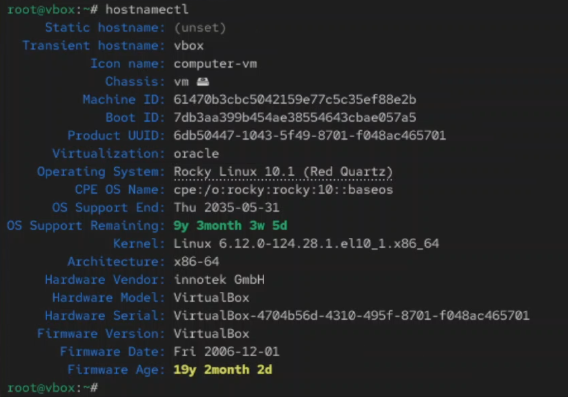
Проверка зависимостей модулей
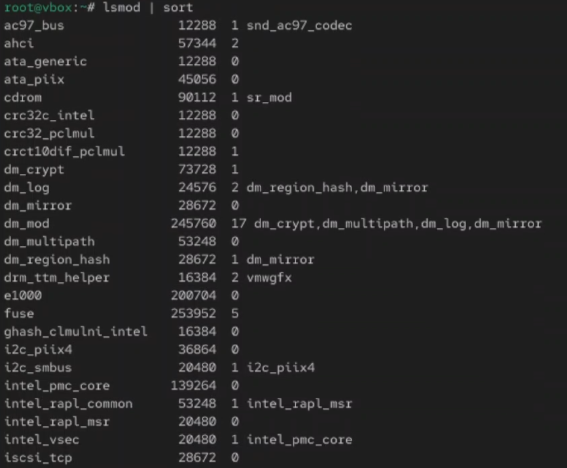
Работа с модулем файловой системы
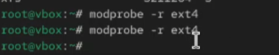
Просмотр сообщений ядра
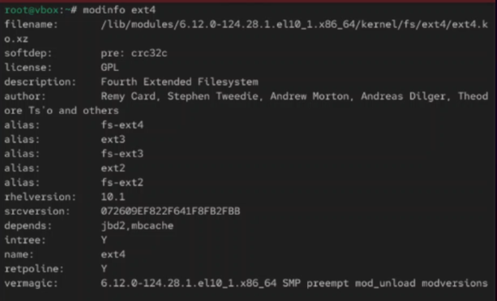
Автоматическая загрузка модулей
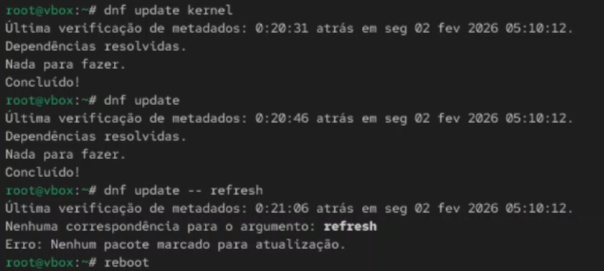
Итоговая проверка

Вывод
В ходе выполнения лабораторной работы были получены навыки работы с
утилитами управления модулями ядра операционной системы. Освоены команды
lsmod, modinfo, insmod,
rmmod, modprobe для загрузки, выгрузки и
получения информации о модулях ядра, а также методы обновления ядра
системы.
Список литературы
[1] Linux man pages: lsmod(8), modinfo(8), insmod(8), rmmod(8), modprobe(8), dmesg(1)